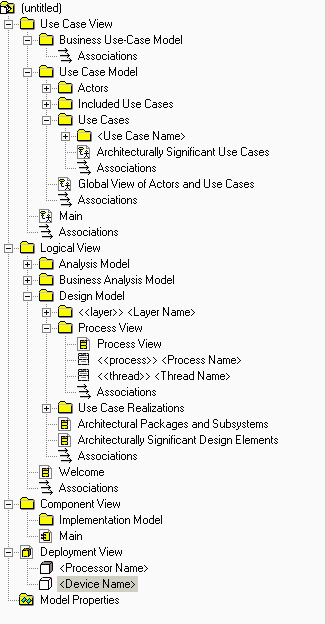

Visión general
SoDA automatiza la generación del informe, de forma que se pueda crear rápidamente y con precisión. Puede generar un
informe de inspección del modelo de guión de uso utilizando la versión de Microsoft® Word® o Adobe® FrameMaker® de
SoDA. Sólo funciona si el modelo de Rational Rose sigue la estructura y el convenio de
denominación para el modelo de guión de uso.
Información relacionada con Rational Unified Process:
Esta guía de la herramienta se aplica al ejecutar Windows 2000, NT 4.0, Windows XP, Solaris o HP-UX.
Para crear un informe de inspección del modelo de guión de uso utilizando SoDA, siga el procedimiento que se indica
para su versión del producto:
-
Desde cualquier lugar de Rational Rose, pulse Informe > Informe SoDA.
-
Cuando aparezca la lista de informes disponibles en SoDA, seleccione Inspección del modelo de guión de uso de
Rational Unified Process.
-
Pulse Aceptar para generar el informe.
-
En la barra de botones de FrameMaker, pulse Nuevo. Efectúe una doble pulsación en SoDA y, a
continuación, efectúe una doble pulsación en RoseDomain y elija la plantilla
RUPUseCaseModelSurvey.fm.
-
Edite el conector y entre el nombre del archivo de modelo.
-
Pulse Archivo > Guardar como para guardar la plantilla en un directorio personal o en el directorio del
proyecto.
-
Pulse SoDA > Generar documento.
-
Revise el documento generado.
La próxima vez que desee generar este documento, simplemente, abra el documento y pulse SoDA > Generar
documento.
|

|
Los elementos del modelo de guión de uso se extraen en la inspección del modelo de guión de
uso.
|
|